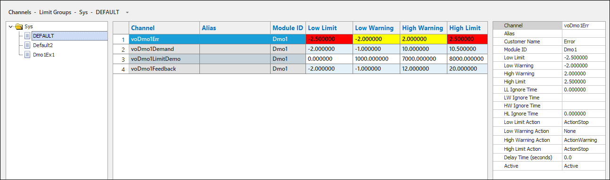
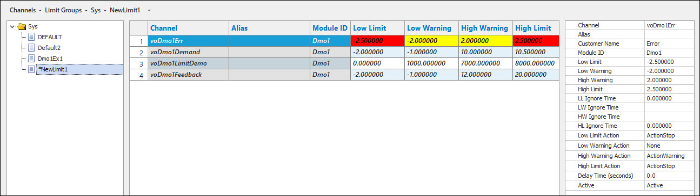
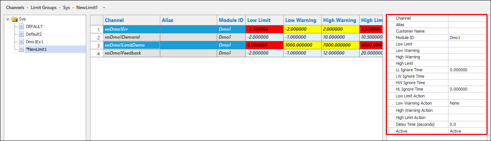
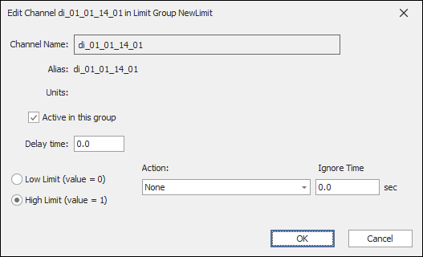
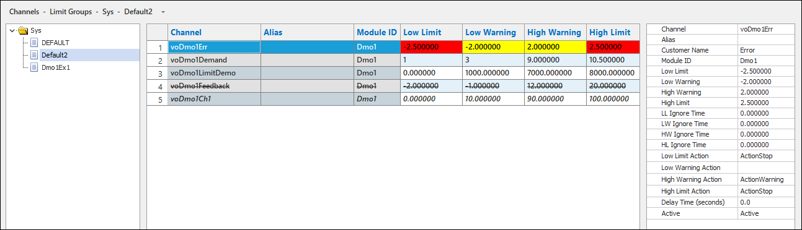

iTest User's Guide
Limit groups are used to change the high and low range for channels during different operating conditions for the test environment. For example, the default limits for a channel may be set in a wide range in order to catch abnormal operating conditions when the engine or speciment is not running. As a test proceeds, different limit groups may be applied to make that range smaller.
Limit groups can be managed in Test Manager or SolutionBuilder by using the Limit Groups editor. This document details how to manage limit groups in SolutionBuilder. You can access this editor by selecting Channels > Limit Groups from the main menu.
 |
NOTE: | This editor will be in read-only mode if using legacy limits (i.e., missing the LimitsVer=3.2 powertek.ini setting). For more information about legacy limits, refer to the Legacy vs 3.2 Limits documentation. |
Limit Groups Editor

iTest includes a default limit group (i.e., DEFAULT.LIM) that lists all channels that have limits enabled. The DEFAULT.LIM limit group serves as the foundation for other limit groups and contains the default limit settings for each channel; the default limit settings are configured in the Channel Definitions editor. This limit group cannot be removed, renamed, or edited; however, you can set an individual channel's limits to be active or inactive in this group without disabling limits for the channel.
When adding a new limit group, the channels listed in DEFAULT.LIM will be added to the new limit group and will display in italics until modifications are made or saved. For more information about limit fonts, refer to the Limit Fonts section below. The maximum amount of limit groups for a solution is 50; once this maximum is met, limit groups cannot be duplicated nor added.
New Limit Group

The property sheet editor allows you to edit the limit settings for multiple channels simultaneously. Any changes made to the limit settings will apply to all selected channels.
Editing Multiple Channels in Property Sheet Editor

Use the table below to configure channel limit settings in your limit groups.
Limit Groups Editor Descriptions
| Column | Description |
| Channel | (Read-only) The name of the channel. |
| Alias/Customer Name | (Read-only) The alias or customer name if defined for the channel. Use the Show Alias/Show Customer Name right-click option to display either the Alias or Customer Name columns. |
| Module ID | (Read-only) The module ID for the channel if applicable. |
| Low Limit | The lowest value at which the test specimen should run for the given channel. |
| Low Warning | The value at which a warning is issued, indicating that the channel value is approaching its low limit. |
| High Warning | The value at which a warning is issued, indicating that the channel value is approaching its high limit. |
| High Limit | The highest value at which the test specimen should run for the given channel. |
| LL Ignore Time | The amount of time that iTest waits after the channel value goes below its Low Limit/Low Warning value before starting the specified limit action. This column is also referred to as the Low Limit Ignore Time. |
| LW Ignore Time* | The amount of time that iTest waits after the channel value goes below its Low Warning value before starting the specified limit action. A blank value indicates that the Low Limit Ignore Time will be used. The default value is 0. |
| HW Ignore Time* | The amount of time that iTest waits after the channel value goes below its High Warning value before starting the specified limit action. A blank value indicates that the High Limit Ignore Time will be used. The default value is 0. |
| HL Ignore Time | The amount of time that iTest waits after the channel value exceeds the High Limit/High Warning value before starting the specified limit action. The default value is 0. |
| Low Limit Action | The action iTest performs when the associated low warning limit is met. |
| Low Warning Action | The action iTest performs when the associated low warning limit is met. |
| High Warning Action | The action iTest performs when the associated high warning limit is met. |
| Active | The state for the channel in the limit group. Possible states are Active or Inactive. If Inactive is selected, then limits are not checked for that channel when the limit group is enabled. |
| Delay Time** | The time (in seconds) to wait before checking limits on that channel. For example, you can put a 10 second delay on checking oil pressure after applying the running limit group. The delay is honored each time a limit group is applied. |
LimitsVer >= 3.2.
The following right-click options and keyboard shortcuts are available in the editor:
Right-Click Options and Shortcuts
| Option | Description | Keyboard Shortcut |
| Left Pane | ||
|---|---|---|
| Add | Adds a new limit group to the list of limit groups. The new limit group will use the DEFAULT.LIM limit group as the foundation for the limit settings. | - |
| Remove* | Removes the selected limit group. | - |
| Rename...* | Launches the Rename dialog, allowing you to rename the limit group. Each limit group must have a unique name. | - |
| Duplicate | Duplicates the selected limit group and renames it with an appended numeric. The duplicated limit group will contain the limit settings as specified in the limit group it was duplicated from. | - |
| Undo | Undoes the previous action. | - |
| Redo | Redoes the last undone action. | - |
| Spreadsheet Editor | ||
| Edit | Launches the Edit Channel dialog for digital input/output channels. This option is only available for those channel types in non-default limit groups. For more information, refer to the Editing Digital Channel Limits section. | - |
| Copy | Copies the value(s) from the selected row/cell. | Ctrl + C |
| Cut** | Removes the selected row/cell value(s) and copies it to the clipboard. | Ctrl + X |
| Paste** | Pastes the copied value(s) to the selected row/cell. Note: You cannot paste value(s) into the DEFAULT.LIM limit group. | Ctrl + V |
| Copy Limits To... | Launches the Copy to Limit Groups dialog, allowing you to paste the limit settings for selected channel rows into other limit groups. Note: You cannot paste limit settings into the DEFAULT.LIM limit group. | - |
| Undo | Undoes the previous action. | Ctrl + Z |
| Redo | Redoes the last undone action. | Ctrl + Y |
| Show Alias/Show Customer Name | Displays either the Alias or Customer Name column, allowing you to view the channel's alias or customer name if defined for the channel. | |
Digital input/output channel limits can be edited via the Edit right-click option in non-default limit groups. When you select Edit, the digital channel's Edit Channel dialog will display, allowing you to change the limit settings. After configuring the digital channel limit settings, the limit group is updated with the new limit settings. Alternatively, you can edit the digital channel's limit settings in the limit group editor; however, any fields not applicable to the digital channel will be read-only. For example, if a digital channel has high limits enabled, then only the High Limit Ignore Time, High Limit Action, Active, and Delay Time fields will be editable for the channel.
Edit Digital Channel Dialog

During a running instance of SolutionBuilder, the following fonts will be used to display different states for the channel row(s) in a limit group:
|
NOTE: | The DEFAULT.LIM limit group will always display in regular font as it matches the limit settings from the Channel Definitions editor with the exception of the active state. |
Example: Limit Fonts
